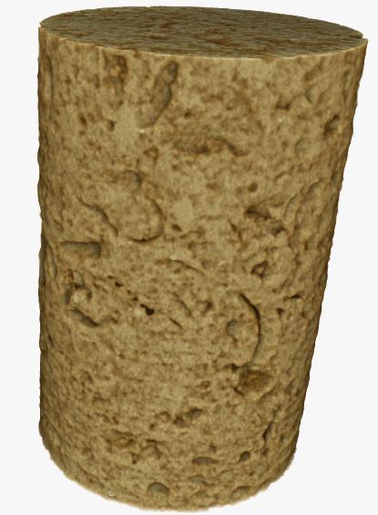
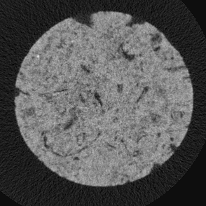
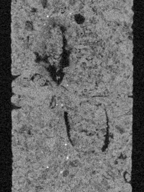
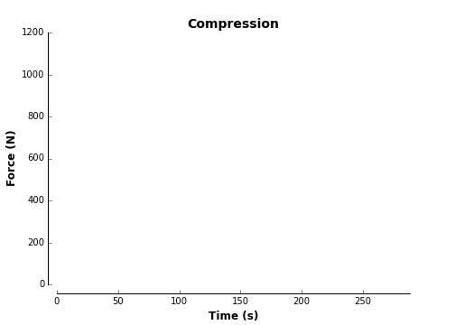
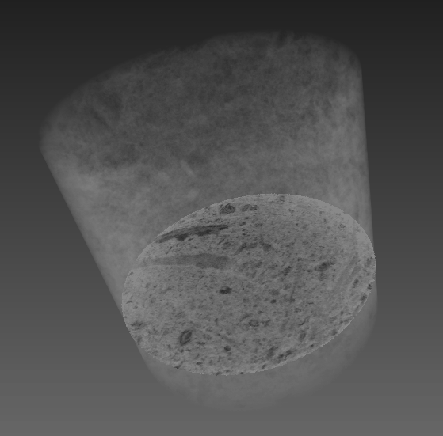
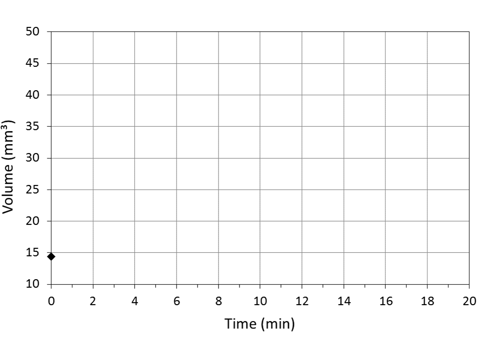
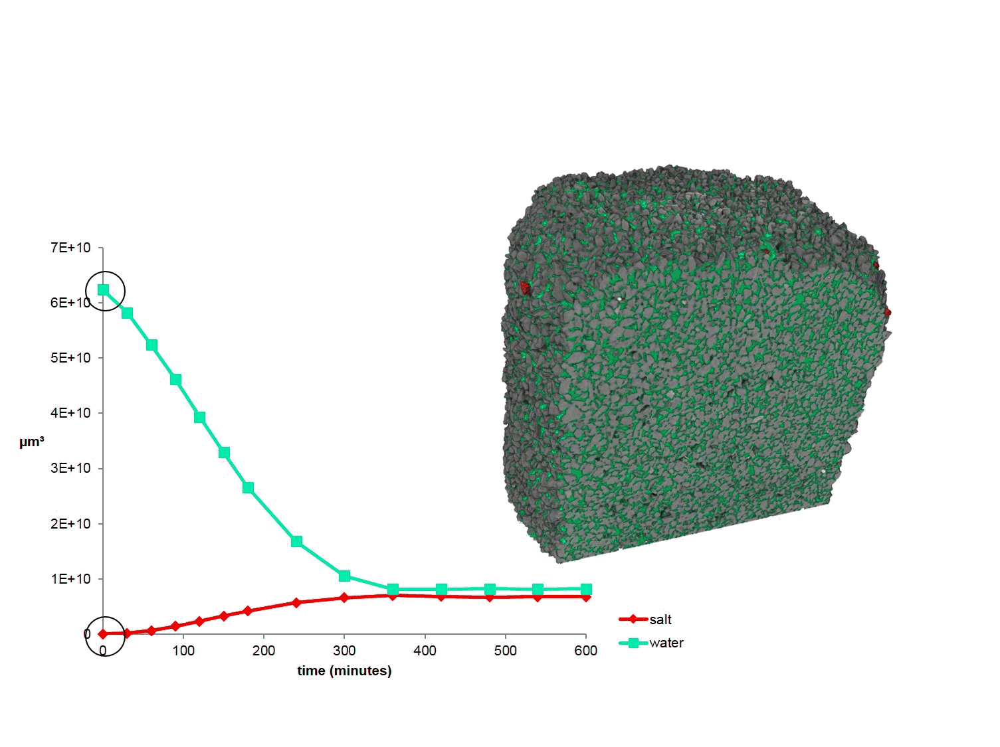

3D imaging of volcano gravitational deformation (analogue models)
Simulation of volcano deformation due to gravitational loading over ductile layer (= process affecting many natural volcanoes
built over sedimentary substratum). CT scan of low cohesion sand cone volume after 72 h of spreading over 4.5 mm silicone
layer (cone = 7.9 cm diameter + rises 1 cm above average level of surrounding base)
Kervyn, M., Boone, M., van Wyk de Vries, B., Cnudde, V., Fontijn, K., Jacobs, P., 2001. 3D imaging of volcano gravitational
deformation by computerized X-ray micro-tomography. Geosphere: Special Volume: Advances in 3D Imaging and Analysis of
Geomaterials, 6(5):483-498.
3D imaging of volcano gravitational deformation
Shaded relief (A, C) and slope distribution (B, D) of Digital Elevation Models extracted from 3D reconstruction of cone
sagging models for cohesionless (A–B) and low cohesion (C–D) sand.
Kervyn, M., Boone, M., van Wyk de Vries, B., Cnudde, V., Fontijn, K., Jacobs, P., 2001. 3D imaging of volcano gravitational
deformation by computerized X-ray micro-tomography. Geosphere: Special Volume: Advances in 3D Imaging and Analysis of
Geomaterials, 6(5):483-498.
Marine geology
Cold-water coral mounds
By Foubert & Pirlet
Renard Centre of Marine Geology
Ghent University
Cold-water coral mounds
Cold-water corals live in depths up to 3000 m
Along the Atlantic continental margin they build up important structures
Cold-water coral mounds
Study area: Porcupine Seabight (SW of Ireland)
In the Porcupine basin they form mound-like features
Cold-water coral mounds
These mounds reach heights up to 300 m and are several kilometers in diameter
The coral mounds are situated at a depth around 800m.
Inside the coral mound
By using gravity-cores / drilling we retrieve samples from inside the coral mound
Inside the coral mound
Coral framework and sediment matrix
Using CT-scans we are able to look inside the samples
Quantification of corals (biogenic fragments) and porosity using micro-CT-scans
Diagenesis inside the coral mound
When coral mounds get buried important diagenetic changes take place
Diagenesis inside the coral mound
Dissolution of the aragonite of the corals
Precipitation of calcite
Visualizing this process using micro-CT-scans
The dissolution of the corals
The start of moldic porosity
The dissolution of the corals
If we visualize the coral in micro-CT-scans we observe not a robust coral piece anymore but only small pieces due to dissolution
The dissolution of the corals
If we visualize the coral in micro-CT-scans we observe not a robust coral piece anymore but only small pieces due to dissolution
The dissolution of the corals
If we visualize the coral in micro-CT-scans we observe not a robust coral piece anymore but only small pieces due to dissolution
The dissolution of the corals
If we visualize the coral in micro-CT-scans we observe not a robust coral piece anymore but only small pieces due to dissolution
The dissolution of the corals
If we visualize the coral in micro-CT-scans we observe not a robust coral piece anymore but only small pieces due to dissolution
The dissolution of the corals
If we visualize the coral in micro-CT-scans we observe not a robust coral piece anymore but only small pieces due to dissolution
The dissolution of the corals
If we visualize the coral in micro-CT-scans we observe not a robust coral piece anymore but only small pieces due to dissolution
The dissolution of the corals
If we visualize the coral in micro-CT-scans we observe not a robust coral piece anymore but only small pieces due to dissolution
Calcite precipitation / aragonite dissolution
Dissolution of aragonite deriving from corals and other biogenic fragments creates important secondary (moldic) porosity
The Ca deriving from aragonite dissolution precipitates as calcite
The study of Heinrich Layers
By Van Rooij et al.
Renard Centre of Marine Geology
Ghent University
CT-scans of HL
Medical CT-scans
Micro CT-scans
CT-scans of HL
Worm holes filled with pyrite
Coarse fragments due to melting of icebergs
Cloud of dens material probably due to diagenesis
Monitoring liquids and their dynamics in stone
3D pore characterization
Oolithic limestone (resolution 5.6µm) Partially filled with water
3D pore characterization
Oolithic limestone (resolution 5.6µm) Partially filled with water
Analyze distribution of water and air in pore structure
3D pore characterization
Oolithic limestone (resolution 5.6µm) Partially filled with water
3D pore characterization
Oolithic limestone (resolution 5.6µm) Partially filled with water
8,5 % air 6,8 % residual water
Water distribution in rock
Visualize water uptake in building material
Preferential uptake along certain zones in the rock
Preferential uptake along certain zones in the rock
Water distribution in rock
Study of the microscopic solute transport and the relationship between permeability and pore structure
Cylindrical core Savonnières limestone
Diameter 6 mm
Height 12 mm
Confining pressure of 10 bar
Study of the microscopic solute transport and the relationship between permeability and pore structure
The sample was first water saturated, after which the water was displaced by a 10 wt% CsCl solution (advection-diffusion-preferential
flow paths)
Continuous micro-CT scanning at 12 seconds/scan, voxelsize 14.8 µm.
CsCl concentration (approximate, by mass fraction)
Drying of Savonnières limestone, initially saturated with CsCl-solution
After pumping CsCl brine; subsequently injection of CO2 at a pressure of 1 bar
Drying process monitored every hour by taking 1 scan at a time resolution of 60 s/scan (800 projections)
In total, 20h of drying
Drying of Savonnières limestone, initially saturated with CsCl-solution
Monitoring mechanical behaviour
Freeze-thaw cycles
Noyant Fine
Compression stage for foam
Fracture formation and propagation
CT5000 Tensile stage (5KN)
4D visualization of metal foam during loading
strut buckling and strut failure
4D Fracture formation and propagation: Saint-Maximin




Freeze-thaw testing
Miliolid limestone
bioclastic rock, composed by marine organisms, mainly forams (e.g. Orbitolites complanatus), within a lime mud matrix.
Cooling cell
De Schryver et al. 2014, A compact, low cost cooling stage for X-ray micro-CT setups. 12th International conference on
X-ray Microscopy: conference program handbook, p. 155-155.
Freeze-thaw cycling
Freeze-thaw cycling
Freeze-thaw cycling

Crystallization & fracture formation
t = 560 s t = 800 s
Crystallization & fracture formation
De Kock, T. et al. 2015. A pore-scale study of fracture dynamics in rock using X-ray micro-CT under ambient freeze-thaw
cycling. Environmental Science & Technology, 49 (5), pp 2867–2874
Monitoring salt crystallization
Salt weathering: sandstone and thenardite
Theoretical X-ray attenuation curves
Thenardite in sandstone
Salt weathering: sandstone and halite
Theoretical X-ray attenuation curves
Sandstone with halite
Salt crystallization
What does salt crystallization look like in 3D?
3 molal Na2SO4-solution from room t° cooled to 0°C => sodium sulfate heptahydrate crystallization
Scans taken continuously during 19 minutes at a rate of 1 scan/80 s (pixel size: 24 µm).
Cnudde, V. et al. 2015. European Journal of Mineralogy, 27 (3)

Drying-crystallization dynamics in sandstone, saturated with salt solution (NaCl)

Derluyn et al. 2015. ICTMS Conf Proceedings
Humidity cycling makes crystals migrate
Desarnaud et al. 2015. Journal of Applied Physics. Derluyn, Cryspom 2016.
Drying - Deliquescence @ 20% RH
Experimental set-up
UGCT’s EMCT scanner:
No wiring problems
Closed test chamber
No disconnection sample-chamber needed
No risk of water leakage at high RH
Drying – deliquescence cycling
One sample of 8 mm diameter:
Capillary saturated with 6.1 m NaCl-solution
3 cycles:
1: drying at 20% RH
2: deliquescence 80% RH – drying 20% RH
3: deliquescence 80% RH – drying 20% RH
Continuous & intermittent scanning:
Drying: 2 hours continuous + intermittent
Deliquescence: 1 scan every 30 minutes
11 minutes/scan ( 1501 projections, 80kV)
8 µm/voxel
1.1 TB raw data!
211 reconstructed scans!
Image processing:
Reconstruction with 4D suite from XRE
Analysis with Avizo ®
Derluyn et al., Salt crystallization dynamics in sandstone: a pore scale study by 4D laboratory X-ray micro-CT, in preparation.
Deliquescence - dissolution dynamics
Drying – crystallization dynamics cycle 1
Pore space analysis:
Derluyn et al., Salt crystallization dynamics in sandstone: a pore scale study by 4D laboratory X-ray micro-CT, in preparation.